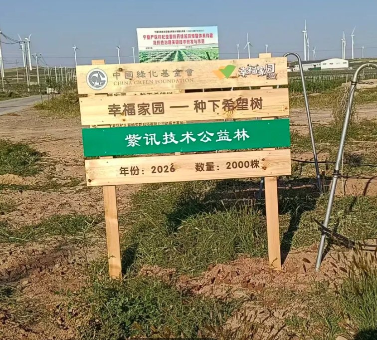
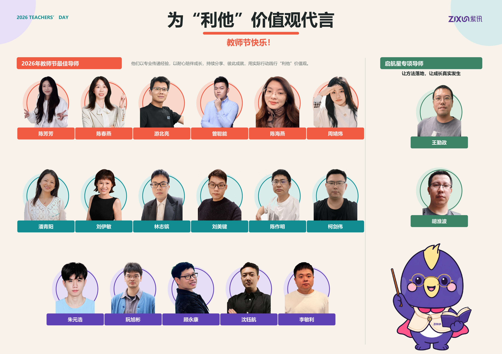
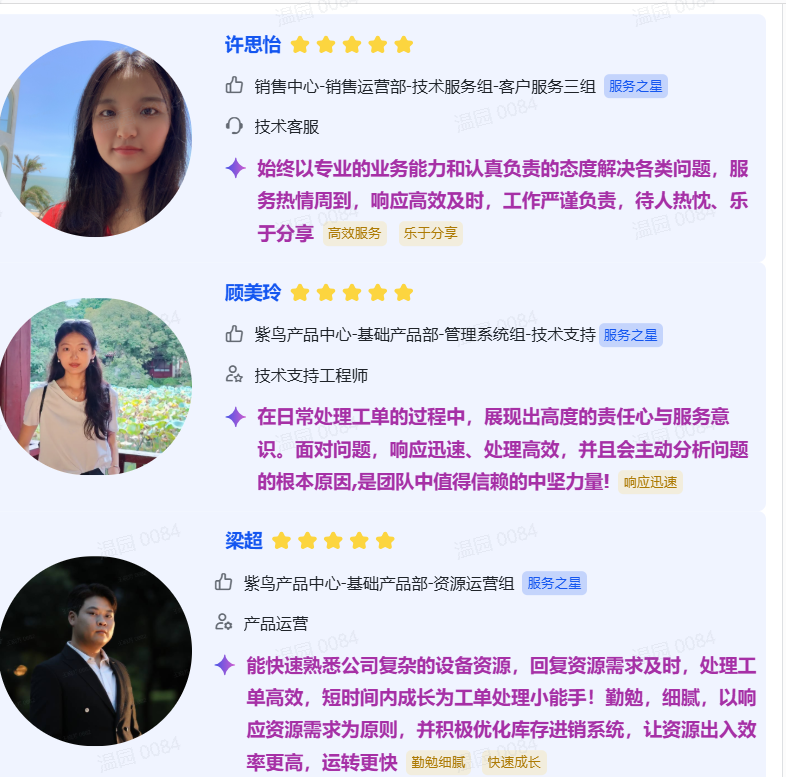
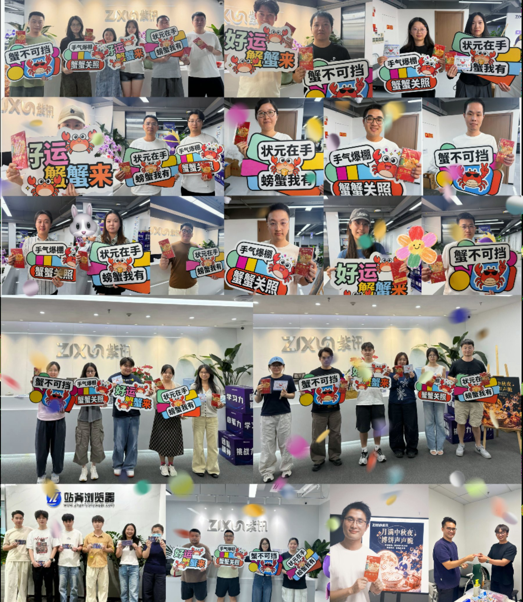

集团组织及人员调整落地
进一步优化组织架构、聚焦核心业务发展，持续推进组织效能提升。
VOL. 02 / OCTOBER · 九月回顾
从组织聚焦到AI进阶，从荒漠新绿到并肩同行。
这一期，我们记录改变发生的位置。
2026年10月刊
内容截至 2026.09.30
九月，是收获的季节，也是整装再出发的起点。这个月，我们完成两轮组织架构优化，让团队更聚焦、协作更高效；AI通识知识库正式上线，为每一位伙伴的AI能力升级搭好阶梯。
806万步的坚持，在宁夏荒漠化作2000棵枸杞树，让“利他”从一句价值观，长成真实可见的绿意。与此同时，紫讯技术完成Pre-IPO轮融资，新的资本与产业伙伴加入同行。改变正在发生——从组织到个人，从工具到文化。十月，继续向前。
9月，紫讯技术完成新一轮融资。本轮融资由国泰海通私募领投，凯辉基金、福建省省级政府投资基金及福州金榕集团跟投。
本轮融资完成后，公司将进一步推动电商AI应用平台LinkFox的技术迭代与应用落地，持续投入电商安全及自动化经营场景的垂直模型、知识引擎、数据系统和AI智能体产品矩阵。
让AI更深入地进入真实电商经营流程，为卖家的效率提升和业务增长创造长期价值。
6个模块、23篇内容，为各岗位伙伴搭建无需编程基础的系统学习路径。
围绕真实销售场景，拆解从需求洞察、方案设计到前后端Demo呈现的完整思路，并将关键过程与相关资料沉淀入库，方便团队继续参考、讨论与复用。
9月20日，紫讯技术公益林在宁夏荒漠正式立牌。每一次运动打卡，都在远方长成真实可见的绿意。
每一步都算数：806万步打卡，换来2000棵枸杞树。
随着中国绿化基金会官方捐赠证书颁发、公益林立牌落地，员工一次次运动打卡汇聚成真实可见的绿意，让共同参与的公益行动在宁夏荒漠扎下根来。


17位最佳导师与2位启航星专项导师，让方法被传递，让成长真实发生。

许思怡、顾美玲、梁超，以专业、责任与快速成长服务每一位伙伴和客户。
9月23日，紫讯圈“坦诚有回应”正式上线。工作中的困扰、希望优化的流程、让公司变得更好的想法，都可以在这里匿名提出并持续查看办理进展。
不只是“发出来”，更重要的是有人负责、持续跟进，并对最终结果进行反馈；暂时无法落实的，也会说明原因。
9月24日，中秋博饼活动在各地办公室热闹开锣。中秋礼包同步就位，伙伴们在欢笑与喝彩中提前感受团圆氛围。
从一张张笑脸，到跨越不同办公室的共同节日记忆，这个秋天，团圆不只是一份礼物，也是一次真实的连接。
